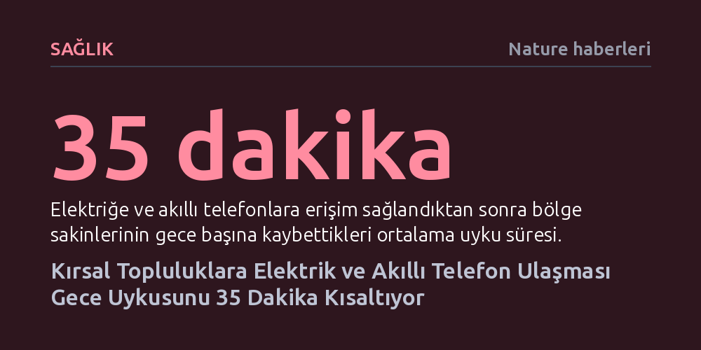

SAGLIK · Nature haberleri · 2026-10-24
Arjantin'deki kırsal topluluklarda yürütülen 12 yıllık araştırma, elektrik ve akıllı telefon erişiminin gece uykusunu ortalama 35 dakika kısalttığını gösterdi.
Yapay ışık ve dijital cihazların uyku düzenini bozucu etkisinin modern şehirlere özgü olmadığını, elektriğe yeni kavuşan geleneksel topluluklarda bile biyolojik ritmi hızla dönüştürdüğünü kanıtlıyor.

Arjantin'in kırsal bölgelerinde yaşayan yerli toplulukların elektrik şebekesine bağlanması, günlük yaşam ritminde köklü bir kırılmaya yol açtı. On iki yıl boyunca sürdürülen izleme çalışması, elektriğe ve beraberinde akıllı telefonlar ile internete erişim sağlayan bölge sakinlerinin geceleri ortalama 35 dakika daha az uyuduğunu ortaya koydu. Yüzyıllardır gün ışığının doğal döngüsüne göre şekillenen günlük hayat, modern altyapının gelişiyle birlikte geri dönülemez biçimde değişti.
Bu kayıp yalnızca odaların yapay ışıkla aydınlatılmasından kaynaklanmıyor. Elektriğin hanelere girmesi, bilgiye ve eğlenceye anında erişim sunan ekranların da yatak odalarına kadar sızmasına zemin hazırladı. Gece saatlerinde sosyal etkileşim ve dijital içerik tüketimi, geleneksel olarak havanın kararmasıyla sona eren uyanıklık süresini gecenin ilerleyen saatlerine doğru uzattı.
Araştırmacılar, elektriğin henüz bulunmadığı dönemden başlayarak şebekenin köylere ulaştığı ve cihazların yaygınlaştığı dönemi kapsayan 12 yıllık uzun erimli bir gözlem yürüttü. Bu süreçte katılımcıların uyku ve uyanıklık saatleri nesnel yöntemlerle takip edildi. Böylece teknolojinin insan uyku kalıpları üzerindeki etkisi, laboratuvar ortamı yerine doğrudan gerçek hayat koşullarında gözlemlenmiş oldu.
Elde edilen bulgular, uyku süresindeki kısalmanın temel olarak geç yatma alışkanlığından kaynaklandığını gösteriyor. Sabahları çalışma, tarım veya okul gibi toplumsal zorunluluklar uyanma saatini büyük ölçüde sabit tutarken, akşamları ekran başında geçirilen zaman uykuya dalış saatini geciktiriyor. Aradaki makas daraldıkça, kaybedilen her dakika doğrudan toplam uyku bütçesinden eksiliyor.
Metropollerde yaşayan modern insanın uykusuzluğu ve ekran bağımlılığı uzun süredir bilinen bir gerçek. Ancak bu araştırma, teknolojinin insan biyolojisini ne kadar süratle teslim alabildiğini çarpıcı bir biçimde kanıtlıyor. Doğal ışık döngüsüyle uyum içinde yaşayan bir topluluk bile elektrik ve akıllı telefonlarla tanıştığında, sanayileşmiş toplumların karşı karşıya olduğu kronik uyku yetersizliği tuzağına hızla düşüyor.
Gecelik 35 dakikalık azalma ilk bakışta küçük bir fark gibi algılansa da haftalık bazda yaklaşık dört saatlik ciddi bir uyku borcu yaratıyor. Bu birikimli uyku kaybı; metabolik bozukluklar, bağışıklık zayıflaması ve zihinsel odaklanma güçlükleri gibi pek çok sağlık riskine davetiye çıkarıyor. Bulgular, yapay ışık ve internetin getirdiği konforun, insan evriminin binlerce yılda şekillendirdiği sirkadiyen ritmi ne denli kolayca bozabileceğini hatırlatıyor.